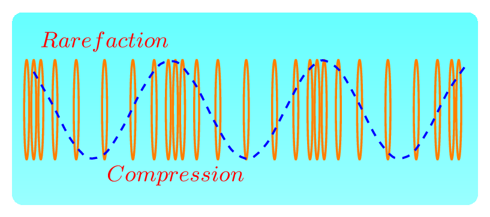
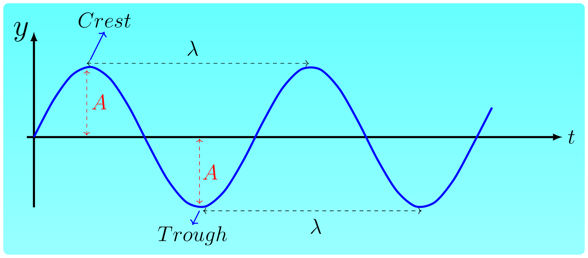

When a stone is thrown in a quiet pond a number of nice circular rings, called ripples emerge on the surface of water which grow gently and move across the pond in a concentric pattern. These growing ripples are called a wave which carries energy from the point of stone thrown to the edge of a pond. Hence a wave can be defined as a disturbance in space that can carry energy from one location to another. A wave creates in a medium when a medium is trying to regain its equilibrium state (normal position). When a stone is thrown it transfers its energy to the surface of water due to which water layer stretches downwards till stone dips down that layer of water. When stone leaves the water layer, water wants to recover its original position to maintain equilibrium due to surface tension but as it reaches to the original position it keeps raising upward because of inertia and stretches the water surface again till it reaches the maximum height. Now due to surface tension this layer of water gets pulled down again and starts falling down below the equilibrium position due to inertia such procedure is the cause of waves (disturbances) on water. Energy propagates two ways in water one way is due to vertical up and down motion of water surface and another way is a back and forth motion of water molecules inside the water. Similar to concentric circles on water surface energy transmitted in space in the form of concentric spheres. Figure below ripples in wave 1  shows the same disturbances traveling away from the center as a series of successive wavefronts labeled crests and troughs. A wavefront is a locus of points along which all phases and displacements are identical. The solid circles depict the outward-moving wave crests; the dashed circles represent wave troughs. Adjacent crests are always a wavelength apart, as are the adjacent troughs.
In short, wave is a wiggles in time and space. On the basis of particle motion relative to the direction of energy propagation there are two forms of waves.
Longitudinal wave, and
Transverse wave.
In longitudinal wave the medium particles vibrate parallel to the motion of the energy. Longitudinal waves are also called pressure waves. As a layer of one part of a medium creates pressure on the other part of the medium. Sound waves in any medium, waves propagating along spring are an example of such wave. In transverse wave the medium particles vibrate perpendicular to the motion of the energy propagation. Movement of a wave through a solid object like a stretched rope or a trampoline is an example of such wave.
On the basis of requirements of medium to propagate energy there are two types of waves.
Mechanical wave, and
Electromagnetic wave.
Mechanical waves require material medium to propagate such as sound waves, water waves, string waves, seismic waves, etc. Electromagnetic waves on the other hand do not need any medium but can propagate both in vacuum and in a medium, such as light waves, heat waves, radio waves, etc. Electromagnetic (em) waves are transverse in nature where electric field and magnetic field are perpendicular to each other and are also perpendicular to the direction of energy propagatation. Longitudinal waves occur when a spring is fixed at one end and pulled back and forth by the other end as shown in figure below. Transverse waves occur when a spring or string is fixed at one end and wiggled up and down by the other end as shown in figure below. Both the waves can be easily described by a transverse nature as they are periodic in nature. The crest is the highest point on a wave. The trough is the valley between two waves, is the lowest point. The wavelength, \(\lambda\) is the distance, either between the crests or troughs of two consecutive waves. It is the length of one complete wave. The amplitude, \(A\) is the peak value (either positive or negative) of a wave. The distance from the undisturbed level (equilibrium position) to the trough or crest. The compression is the part of the longitudinal wave where the particles are crowded together. The rarefaction is the part of the longitudinal wave where the particles are spread apart. The wavelength is the distance from compression to compression or rarefaction to rarefaction in a pressure (longitudinal) wave. The frequency, \(f\) is a number of complete waves per second.
(a)Longitudinal wave
(b)Transverse wave
Figure6.1.2.Representation of waves If \(T\) is a time period to generate one complete wave then
Wave speed, \(v\) is telling how fast the information propogates. Suppose wave covers (information reaches) a distance \(\lambda\) in time \(T\text{,}\) then from equation (2.1.1), we have
\begin{equation}
v = f \times \lambda\tag{6.1.2}
\end{equation}
There is a third kind of new wave that has just been discovered, known as a gravitaional wave. It is a disturbance in spacetime and can pass through anything undisturbed. It travels with the velocity of light. It stretches and squashes the spacetime during propagation.
Resonance: It is a condition at which amplitude of vibration of an object becomes maximum once the object is subjected to a force with a frequency equal to its natural frequency. Resonance is a frequency at which standing waves are produced. The natural frequencies of a musical instrument are reffered as the harmonics of the instrument.
Subsection6.1.1Sound
Sound is a longitudinal wave that can be produced by vibration. The speed at which sound waves travel through a medium depends on the density and stiffness of the medium, whether condition, temperature, moisture, etc. It is a mechanical wave and creates pressure on a layer of medium when propagates, hence it is also called a pressure wave. Sound wave is longitudinal in nature. When such energy reaches to our eardrum it begins vibrating and we get sensation of hearing. The physical character of sound depends upon the listener's audible perception. The physical quantity that defines the loudness is amplitude (sound pressure) of the wave and the quantity that defines the timbre (or quality) of sound is a frequency \(f\text{.}\) A sound of frequency \(20 Hz\) to \(20 kHz\) is audible to healthy human ear. Loudness increases with the increase of pressure amplitude at a given frequency. Loudness (or Intensity level) is a sound energy received by a unit area of listener's eardrum (or detector) in unit time. Loudness is a listener's perception. Intensity is an energy carried by a wave per unit area per unit time. Intensity is a property of sound producing device. Loudness is an intensity received by a listener.
More content.
Subsection6.1.2Reverberation and Echo
Echo and reverberation are two distinct phenomenon of sound waves which occur due to its reflection from any surfaces. Sound endures in our brain for longer than 0.1 second. If sound is reflected from any surface reaches to our ear within 0.1 second of the initial sound, then it seems that the sound is prolonged. The reception of reflected sound within 0.1 second causes the reverberation(or) the prolonging of a sound effect. The speed of sound in air is about \(340 m/s\) at room temperature. If the wall of a room is \(17 \) meter away from the source of sound then it reflects back from the wall and reaches to the ear within 0.1 s
\begin{equation*}
t=\frac{d}{v} = \frac{2\times 17}{0340} = 0.1 s.
\end{equation*}
Hence, causing a prolonged sound effect, called a reverberation. Echoes are also the effect of reflection of sound waves perceived by the ear. When a reflected sound wave reaches the ear after 0.1 seconds of the original sound was heard, then echoes are produced. If the elapsed time between the arrivals of the two sound waves is more than 0.1 seconds, then the sensation of the first sound will have died out. In other words, echo is a sensation of second sound wave after the effect of original sound wave will vanish. It is not a prolonging of the original sound wave as in reverberation.
Subsection6.1.3Doppler Effect
The Doppler effect is the change in perceived frequency of a source due to the relative motion between the source and the receiver. It applies to all sorts of waves. Doppler effect can be experienced as the change in pitch (or frequency) received. When the ambulence is approaching, the pitch of siren is getting higher than the actual frequency of siren. When the ambulence passes by, the frequency sounds the same as the actual emitted frequency and when the ambulance is moving away, the pitch is getting lower than the actual emitted frequency. When the source of the waves is coming towards the observer, observer receives more waves every second compared to being at rest. That is waves bunch together for the observer giving impression for the decrease of wavelength and causing an increase in the frequency. Conversely, if the source of waves is going away from the observer, observer receives less waves every second compared to being at rest. That is waves ”spread out” for the observer giving impression for the increase of wavelength and causing a decrease in the frequency. Doppler effect 3